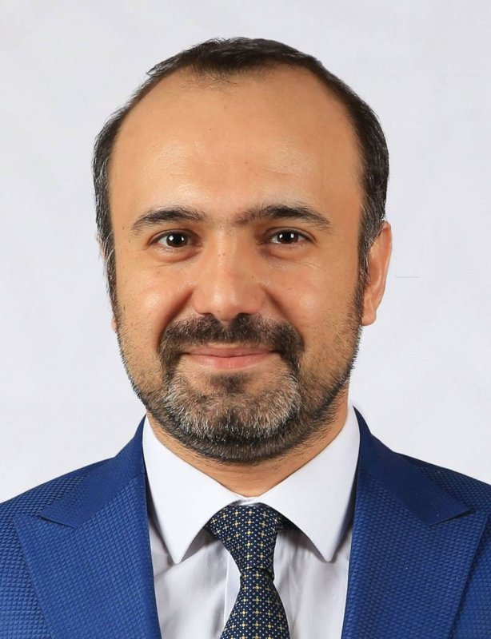
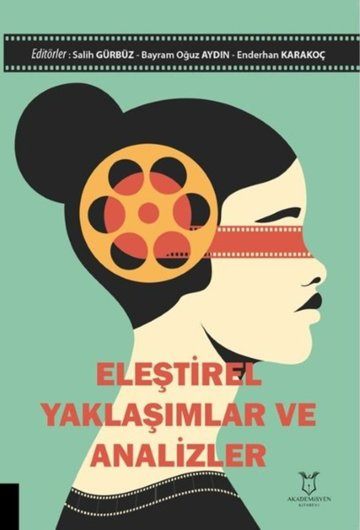
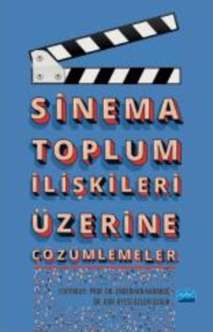
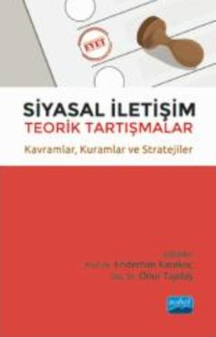

Doç. Dr.
Salih Gürbüz
Necmettin Erbakan Üniversitesi, Radyo, Televizyon ve Sinema Bölüm Başkanı
İletişimi insanın kendisiyle, başkalarıyla ve toplumla kurduğu ilişkinin merkezinde gören bir akademisyen ve radyocu. Medya söylemlerini çözümlüyor, iletişimin psikolojisini yazıyor, mikrofonun başında bu soruları dinleyicilerle paylaşıyor.
Hakkında
Doç. Dr. Salih Gürbüz, Necmettin Erbakan Üniversitesi Güzel Sanatlar ve Mimarlık Fakültesi'nde görev yapan bir akademisyen, yazar ve radyocudur. Radyo, Televizyon ve Sinema Bölümü'nün başkanlığını yürütmekte, Film Tasarımı ve Yönetmenliği Anasanat Dalı'nda ders vermektedir. Yüksek lisans ve doktora eğitimini Selçuk Üniversitesi Sosyal Bilimler Enstitüsü'nde, Halkla İlişkiler ve Tanıtım alanında tamamlamıştır.
Çalışmaları kurum imajı ve halkla ilişkilerden siyasal iletişime, sinema kuramlarından dijital medyaya ve iletişim psikolojisine uzanır. Medya metinlerini eleştirel söylem analizi ve çerçeveleme gibi yöntemlerle incelemektedir.
Akademik çalışmalarının yanında yirmi beş yılı aşkın radyo deneyimiyle yayıncılığı sürdürmektedir. Radyoda, YouTube kanalında ve televizyon programlarında iletişim, teknoloji bağımlılığı ve psikoloji üzerine içerikler hazırlamaktadır. Hakimiyet ve Milli Gazete'de yazıları yayımlanmış, Ribat ve Gönül dergilerinde yazmaktadır.
- 2004-2005
- Anadolu'nun Sesi dergisi, genel yayın yönetmeni
- 2017
- Doktor öğretim üyesi
- 2020
- Doçent
- Bugün
- Necmettin Erbakan Üniversitesi, Radyo, Televizyon ve Sinema Bölüm Başkanı
- Kurum imajı
- Halkla ilişkiler
- Siyasal iletişim
- Sinema kuramları
- Dijital medya
- İletişim psikolojisi
- Eleştirel söylem analizi
- Radyo yayıncılığı
Kitaplar
Tek yazarlı ve editörlü kitaplar, kitap bölümleri.

En Büyük Meselemiz: İlet-İşim
Kişilerarası İlişkilerde ve Sosyal Medyada İletişim
Literatürk Academia


Editörlü kitaplar


Eleştirel Yaklaşımlar ve Analizler
Editörler: Salih Gürbüz, Bayram Oğuz Aydın, Enderhan Karakoç
Akademisyen Kitabevi
Satın al
Public Relations in the Networked Publics
Editörler: Bayram Oğuz Aydın, Salih Gürbüz, Özlem Duğan
Peter Lang
Satın alKitap bölümleri

Sinema Felsefesi
Nobel Akademik Yayıncılık

Sinema Toplum İlişkileri Üzerine Çözümlemeler
Nobel Akademik Yayıncılık

Siyasal İletişim: Teorik Tartışmalar
Nobel Akademik Yayıncılık

Siyasal İletişim: Uygulamalı Tartışmalar
Nobel Akademik Yayıncılık
Radyo ve YouTube
Akademideki soruları mikrofona ve ekrana taşıyan yayınlar.
Medya ve Çocuk
Hafta içi her gün, 16.00Repliklerle Terapi
68 bölümMedya: Görünenler ve Ötesi
20 bölümİletişim Meselesi
Program dizisi YouTube
İletişim Günlüğü
@iletisimgunlugu · Kanala git
YouTube
İletişim Günlüğü
@iletisimgunlugu · Kanala git
Yazılar
Kültür ve sanat dergilerinde yayımlanan yazılar ve söyleşiler.
- İletişimde Nezaket ve Konuşma Sanatının Yeri ve Önemi Ribat Dergisi
- Psikolojinin Işığında İletişim: Kendini Bilmek ve Başkalarıyla Bağ Kurmak Ribat Dergisi
- İletişim Kendini Bilmektir Ribat Dergisi
- Ramazan ve İletişim Ahlakı Ribat Dergisi
- Onaylanma Açlığından Sanal Yalnızlığa: Sosyal Medya Bağımlılığının Anatomisi Ribat Dergisi
- Metafizik Bir İletişim Formu Olarak İnsan Ribat Dergisi
- Hac İbadetinde ve Umrede İletişim Etiği Ribat Dergisi
- İletişim Cihadı: Söz, Anlam ve Modern Çağın Yeni Cephesi Ribat Dergisi
- Hissetmeden Anlaşılmaz: İletişimde Empati Ahlakı Ribat Dergisi
- Kibir İletişimi Nasıl Hasta Eder? Ribat Dergisi
- İnsan Eşittir İletişim Ribat Dergisi
- Takdir, Beğeni ve Gerçek Özgüvenin İletişime Etkisi Ribat Dergisi
- İletişim Dışarıda Değil, İçeride Başlar Gönül Dergisi · Söyleşi · Şubat 2026
- Etkili İletişimin Dinamikleri Gönül Dergisi · Söyleşi · Şubat 2023
Yayınlar
Makaleler, hakemlik ve atıf kayıtları güncel olarak aşağıdaki profillerde.
İletişim
E-posta
sgurbuz@erbakan.edu.tr
Kurum
Necmettin Erbakan Üniversitesi
Güzel Sanatlar ve Mimarlık Fakültesi, Konya
Güzel Sanatlar ve Mimarlık Fakültesi, Konya